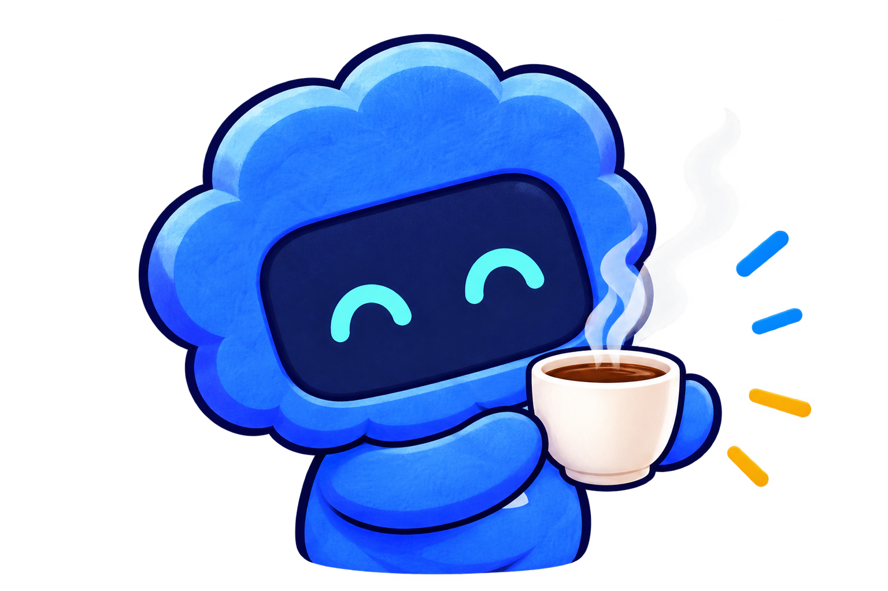

A LITTLE CURIOSITY. A REAL POSSIBILITY.
Meet the person
behind the project.
Friendship, romance, and a little shared curiosity.
Thoughtful connections for people who use Codex.
An independent prototype. A small glimpse of what’s possible.
A shared curiosity
can be a lovely start.
can be a lovely start.
YOUR DAILY COFFEE BRIEF
Less scrolling.
More possibility.
Thoughtful connections.
Clear reasons. Your decision.
FriendLover
A TASTE OF THE DEMO
Your daily coffee brief
A few curious people. A thoughtful place to start.
Static preview · fictional adults
Illustrative profiles from the existing demo. No real people, matches, or messages here.

FRIEND OR LOVER. ALWAYS YOUR CHOICE.
Curiosity opens the door.
You choose what comes next.
Explore the working prototype with your own sharing choices.
Building together is one possibility. Connection is the point.
ChatGPT sign-in required · For adults 18+